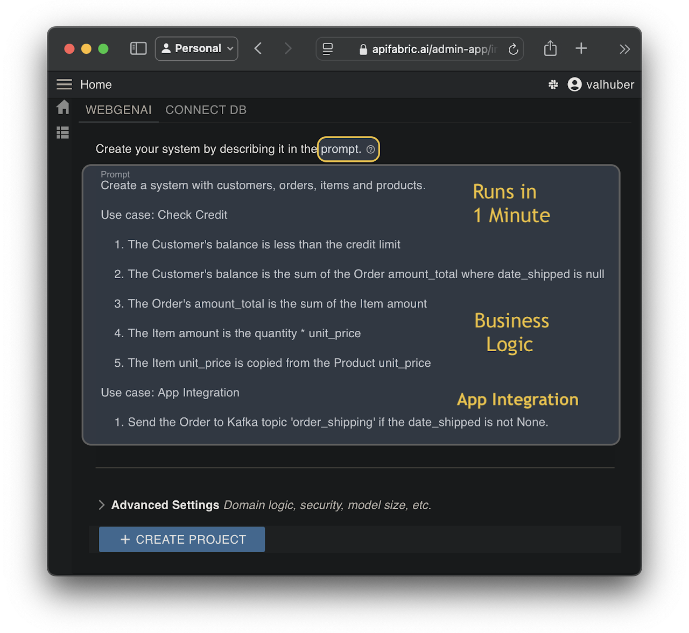
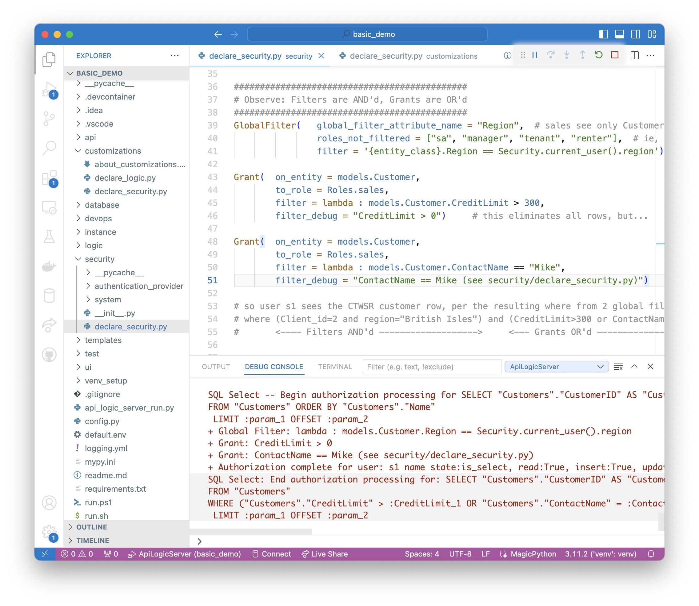
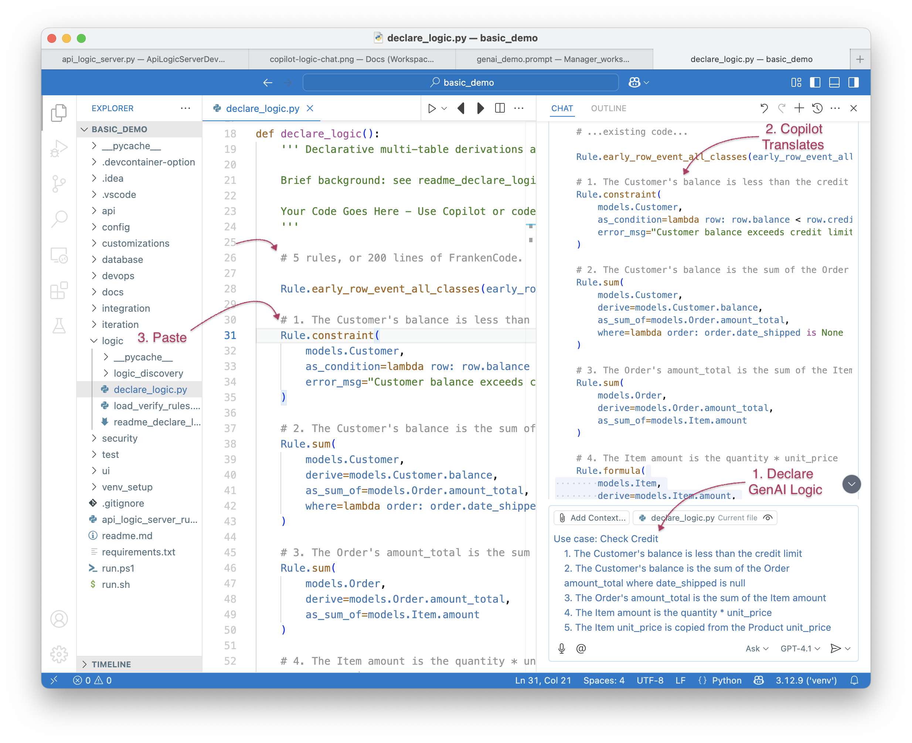
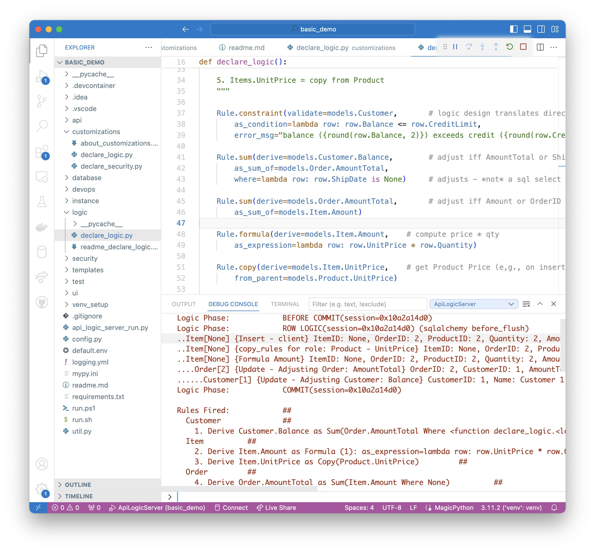
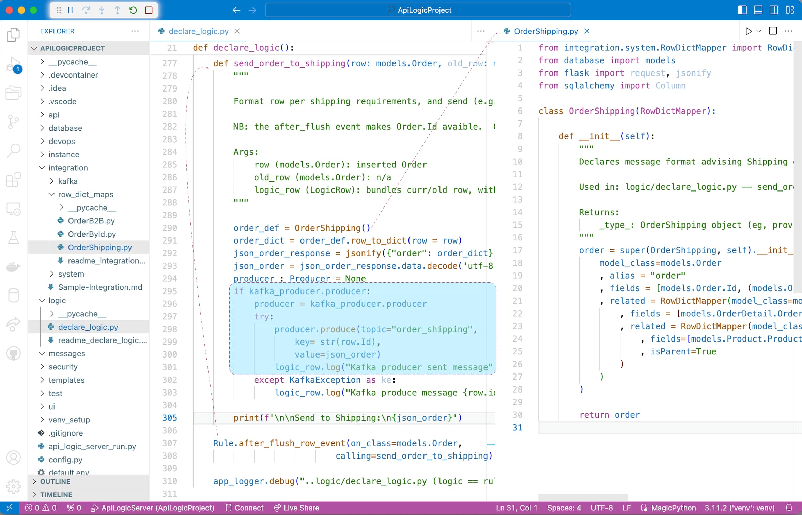
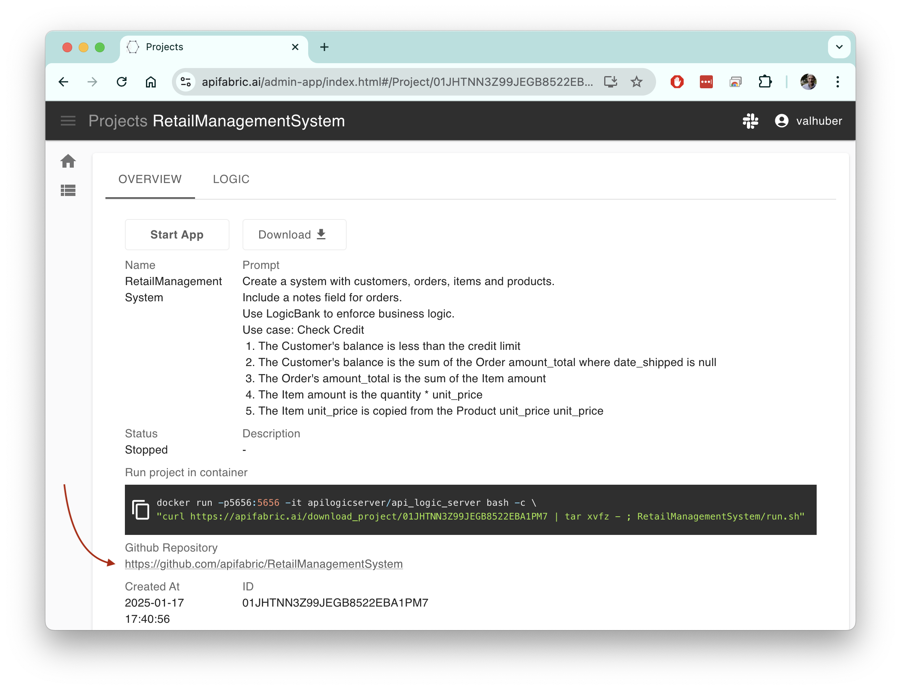
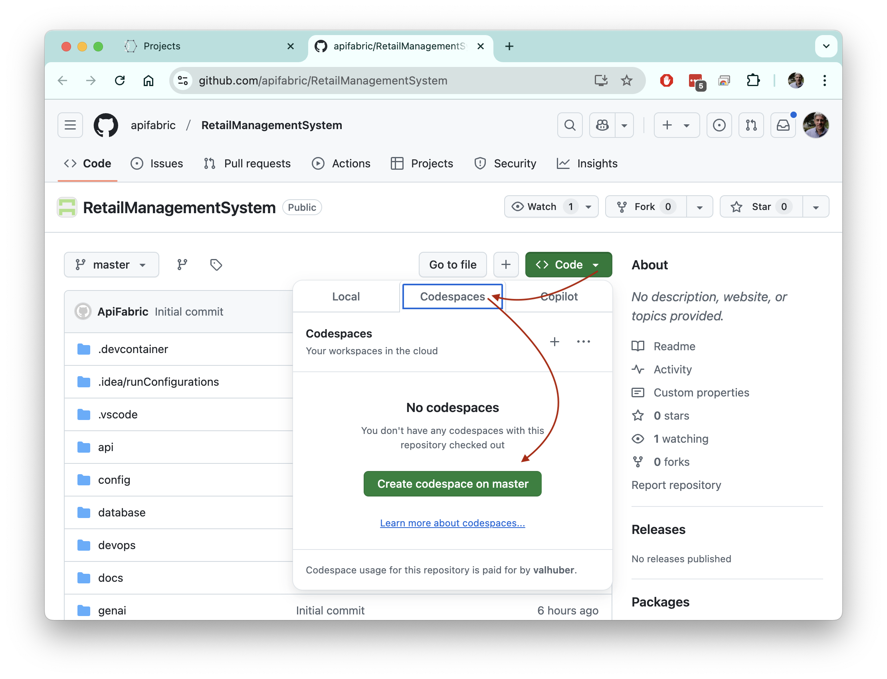
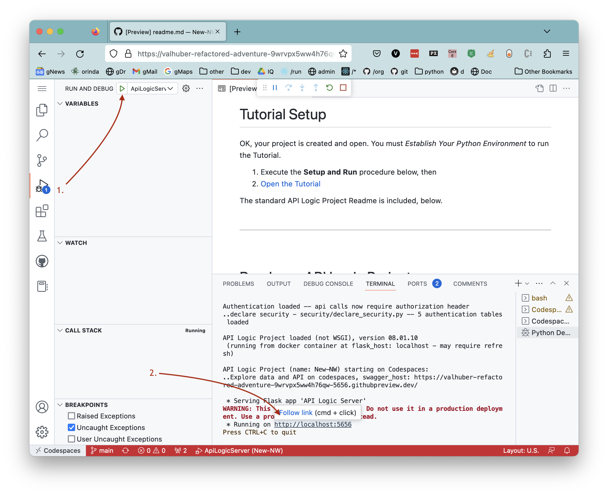

Tour
Welcome to GenAI-Logic
-
Instant mcp-enabled microservices (APIs and Admin Apps), from a database or GenAI prompt -- one command and you are ready for MCP, Vibe and Business User Collaboration.
-
Customize with Declarative Rules and Python in your IDE, standard container deployment
You are in the API Logic Server Manager. This is a good place to manage projects, create notes and resources, etc.
Explore Creating Projects
Evaluation Guide: click on the disclosure buttons, below.
1. Product Tour - Start here
We'll illustrate API Logic Server basic GenAI-Logic operation: creating projects from new or existing databases, adding logic and security, and customizing your project using your IDE and Python.
The entire process takes 20 minutes; usage notes:
- Important: look for readme files in created projects.
- You may find it more convenient to view this in your Browser.
1. Automation: Project Creation
API Logic Server can create projects from existing databases, or use GenAI to create projects with new databases. Let's see how.
From Existing Database
Create the project - use the CLI (Terminal > New Terminal), :
Note: the
db_urlvalue is an abbreviation for a test database provided as part of the installation. You would normally supply a SQLAlchemy URI to your existing database.
The database is Customer, Orders, Items and Product

GenAI: New Database
You can create a project and a new database from a prompt using GenAI, either by:
See GenAI Project Creation
>Here we use the GenAI CLI:
- If you have signed up (see Get an OpenAI Key, below), this will create and open a project called
genai_demofromgenai_demo.prompt(available in left Explorer pane):
- Or, you can simulate the process (no signup) using:
als genai --repaired-response=system/genai/examples/genai_demo/genai_demo.response_example --project-name=genai_demo
For background on how it works, click here.
Or, use WebGenAI:

2. Working Software Now
Open in your IDE and Run
You can open with VSCode, and run it as follows:
-
Create Virtual Environment: automated in most cases; see the Appendix (Procedures / Detail Procedures) for details.
-
Start the Server: F5 (also described in the Appendix).
-
Start the Admin App: either use the links provided in the IDE console, or click http://localhost:5656/. The screen shown below should appear in your Browser.
The sections below explore the system that has been created (which would be similar for your own database).
API with Swagger
The system creates an API with end points for each table, with filtering, sorting, pagination, optimistic locking and related data access -- self-serve, ready for custom app dev.
See the Swagger

Admin App
It also creates an Admin App: multi-page, multi-table -- ready for business user agile collaboration, and back office data maintenance. This complements custom UIs created with the API.
You can click Customer Alice, and see their Orders, and Items.
See the Admin App

MCP, Vibe, Collaboration
In little more than a minute, you've used either
- GenAI to create a database and project using Natural Language, or
- 1 CLI command to create a project from an existing database
The project is standard Python, which you can customize in a standard IDE.
This means you are ready for:
-
Vibe: unblock UI dev
- Instead of creating data mockups, use GenAI to create real data
- Use you favorite Vibe tools with your running API
- And, you'll have projects that are architecurally correct: shared logic, enforced in the server, available for both User Interfaces and services.
-
MCP: your project is MCP-ready:
python integration/mcp/mcp_client_executor.py. We'll explore more interesting examples below. -
Collaboration to Get Requirements Right: Business Users can use GenAI to create systems, and the Admin app to verify their business idea. And iterate.
But automated direct access to the database is a terrible architecture. A key feature of GenAI-Logic is logic automation, using declarative, spreadsheet-like business rules. Let's now explore those.
3. Declare Logic And Security
While API/UI automation is a great start, it's critical to enforce logic and security. You do this in your IDE. Here's how.
The following add_customizations process simulates:
- Adding security to your project, and
- Using your IDE to declare logic and security in
logic/declare_logic.shandsecurity/declare_security.py.
Declared security and logic are shown in the screenshots below.
It's quite short - 5 rules, 7 security settings.
To add customizations, in a terminal window for your project:
1. Stop the Server (Red Stop button, or Shift-F5 -- see Appendix)
2. Add Customizations
Security: Role Based Access
The add_customizations process above has simulated using your IDE to declare security in logic/declare_logic.sh.
To see security in action:
1. Start the Server F5
2. Start the Admin App: http://localhost:5656/
3. Login as s1, password p
4. Click Customers
Observe:
1. Login now required
2. Role-Based Filtering
Observe you now see fewer customers, since user s1 has role sales. This role has a declared filter, as shown in the screenshot below.
3. Transparent Logging
See Security Declarations
The screenshot below illustrates security declaration and operation:
-
The declarative Grants in the upper code panel, and
-
The logging in the lower panel, to assist in debugging by showing which Grants (
+ Grant:) are applied:

Logic: Derivations, Constraints
Logic (multi-table derivations and constraints) is a significant portion of a system, typically nearly half. API Logic server provides spreadsheet-like rules that dramatically simplify and accelerate logic development.
Rules are declared in Python, simplified with IDE code completion. The screen below shows the 5 rules for Check Credit Logic.
The add_customizations process above has simulated the process of using your IDE to declare logic in logic/declare_logic.sh.
To see logic in action:
1. In the admin app, Logout (upper right), and login as admin, p
2. Use the Admin App to add an Order and Item for Customer Alice (see Appendix)
Observe the rules firing in the console log - see Logic In Action, below.
💡 Logic: Multi-table Derivations and Constraint Declarative Rules.
Declarative Rules are 40X More Concise than procedural code.
For more information, click here.
See Logic In Action
Declare logic with WebGenAI, or in your IDE using code completion or Natural Language:

a. Chaining
The screenshot below shows our logic declarations, and the logging for inserting an Item. Each line represents a rule firing, and shows the complete state of the row.
Note that it's a Multi-Table Transaction, as indicated by the indentation. This is because - like a spreadsheet - rules automatically chain, including across tables.

b. 40X More Concise
The 5 spreadsheet-like rules represent the same logic as 200 lines of code, shown here. That's a remarkable 40X decrease in the backend half of the system.
💡 No FrankenCode
Note the rules look like syntactically correct requirements. They are not turned into piles of unmanageable "frankencode" - see models not frankencode.
c. Automatic Re-use
The logic above, perhaps conceived for Place order, applies automatically to all transactions: deleting an order, changing items, moving an order to a new customer, etc. This reduces code, and promotes quality (no missed corner cases).
d. Automatic Optimizations
SQL overhead is minimized by pruning, and by elimination of expensive aggregate queries. These can result in orders of magnitude impact.
e. Transparent
Rules are an executable design. Note they map exactly to our natural language design (shown in comments) - readable by business users.
Optionally, you can use the Behave TDD approach to define tests, and the Rules Report will show the rules that execute for each test. For more information, click here.
Logic-Enabled MCP
Logic is automatically executed in your MCP-enabled API. For example, consider the following MCP orchestration:
List the orders date_shipped is null and CreatedOn before 2023-07-14,
and send a discount email (subject: 'Discount Offer') to the customer for each one.
When sending email, we require a business rules to ensure it respects the opt-out policy:

With the server running, test it by posting to SysMCP like this:
curl -X 'POST' 'http://localhost:5656/api/SysMcp/' -H 'accept: application/vnd.api+json' -H 'Content-Type: application/json' -d '{ "data": { "attributes": {"request": "List the orders date_shipped is null and CreatedOn before 2023-07-14, and send a discount email (subject: '\''Discount Offer'\'') to the customer for each one."}, "type": "SysMcp"}}'
For more on MCP, click here.
4. Iterate with Rules and Python
Not only are spreadsheet-like rules 40X more concise, they meaningfully simplify maintenance. Let's take an example:
Give a 10% discount for carbon-neutral products for 10 items or more.
The following add-cust process simulates an iteration:
-
acquires a new database with
Product.CarbonNeutral -
issues the
ApiLogicServer rebuild-from-databasecommand that rebuilds your project (the database models, the api), while preserving the customizations we made above. -
acquires a revised
ui/admin/admin.yamlthat shows this new column in the admin app -
acquires this revised logic - in
logic/declare_logic.py, we replaced the 2 lines for themodels.Item.Amountformula with this (next screenshot shows revised logic executing with breakpoint):
def derive_amount(row: models.Item, old_row: models.Item, logic_row: LogicRow):
amount = row.Quantity * row.UnitPrice
if row.Product.CarbonNeutral and row.Quantity >= 10:
amount = amount * Decimal(0.9) # breakpoint here
return amount
Rule.formula(derive=models.Item.Amount, calling=derive_amount)
To add this iteration, repeat the process above - in a terminal window for your project:
1. Stop the Server (Red Stop button, or Shift-F5 -- see Appendix)
2. Add Iteration
3. Set the breakpoint as shown in the screenshot below
4. Test: Start the Server, login as Admin
5. Use the Admin App to update your Order by adding 12 Green Items
At the breakpoint, observe you can use standard debugger services to debug your logic (examine Item attributes, step, etc).

This simple example illustrates some significant aspects of iteration, described in the sub-sections below.
💡 Iteration: Automatic Invocation/Ordering, Extensible, Rebuild Preserves Customizations
a. Dependency Automation
Along with perhaps documentation, one of the tasks programmers most loathe is maintenance. That's because it's not about writing code, but it's mainly archaeology - deciphering code someone else wrote, just so you can add 4 or 5 lines that will hopefully be called and function correctly.
Rules change that, since they self-order their execution (and pruning) based on system-discovered dependencies. So, to alter logic, you just "drop a new rule in the bucket", and the system will ensure it's called in the proper order, and re-used over all the Use Cases to which it applies. Maintenance is faster, and higher quality.
b. Extensibile with Python
In this case, we needed to do some if/else testing, and it was convenient to add a pinch of Python. Using "Python as a 4GL" is remarkably simple, even if you are new to Python.
Of course, you have the full object-oriented power of Python and its many libraries, so there are no automation penalty restrictions.
c. Debugging: IDE, Logging
The screenshot above illustrates that debugging logic is what you'd expect: use your IDE's debugger. This "standard-based" approach applies to other development activities, such as source code management, and container-based deployment.
d. Customizations Retained
Note we rebuilt the project from our altered database, illustrating we can iterate, while preserving customizations.
API Customization: Standard
Of course, we all know that all businesses the world over depend on the hello world app. This is provided in api/customize_api. Observe that it's:
-
standard Python
-
using Flask
-
and, for database access, SQLAlchemy. Note all updates from custom APIs also enforce your logic.
Messaging With Kafka
Along with APIs, messaging is another technology commonly employed for application integration. See the screenshot below; for more information, see Sample Integration.

5. Deploy Containers: No Fees
API Logic Server also creates scripts for deployment. While these are not required at this demo, this means you can enable collaboration with Business Users:
- Create a container from your project -- see
devops/docker-image/build_image.sh - Upload to Docker Hub, and
- Deploy for agile collaboration.
2. New Database - using GenAI Microservice Automation (Experiment with AI - Signup optional)
You can do this with or without signup:
- If you have signed up (see Get an OpenAI Key, below), this will create a new database and project called
genai_demo, and open the project. It's created usinggenai_demo.prompt, visible in left Explorer pane:
- Or, you can simulate the process (no signup) using:
als genai --repaired-response=system/genai/examples/genai_demo/genai_demo.response_example --project-name=genai_demo
Verify it's operating properly:
- Run Configurations are provided to start the server
- Verify the logic by navigating to a Customer with an unshipped order, and altering one of the items to have a very large quantity
- Observe the constraint operating on the rollup of order amount_totals.
- View the logic in
logic/declare_logic.py - Put a breakpoint on the
as_condition. Observe the console log to see rule execution for this multi-table transaction.
- View the logic in
What Just Happened? Next Steps...
genai processing is shown below (internal steps denoted in grey):
-
You create your.prompt file, and invoke
als genai --using=your.prompt. genai then creates your project as follows:a. Submits your prompt to the
ChatGPT APIb. Writes the response to file, so you can correct and retry if anything goes wrong
c. Extracts model.py from the response
d. Invokes
als create-from-model, which creates the database and your project -
Your created project is opened in your IDE, ready to execute and customize.
a. Review
Tutorial.md, Explore Customizations.

You can iterate the logic and data model
The approach for an iteration is to create a new project from an existing one:
- add another prompt to an existing projects
docsdirectory, specifying your changes - use
als genai, specifying--usingexisting projectsdocsdirectory, and--project-nameas the output project
Logic iterations are particuarly useful. For example, here we take the basic check-credit logic, and add:
Provide a 10% discount when buying more than 10 carbon neutral products.
The Item carbon neutral is copied from the Product carbon neutral
Explore genai_demo_iteration_discount. It's an iteration of basic_demo (see system/genai/examples/genai_demo/genai_demo_iteration_discount/002_create_db_models.prompt). This will add carbon_neutral to the data model, and update the logic to provide the discount:
# Iterate with data model and logic
als genai --project-name='genai_demo_with_discount' --using=system/genai/examples/genai_demo/genai_demo_iteration_discount
# open Docs/db.dbml
You can perform model iterations: add new columns/tables, while keeping the prior model intact. First, we create a project with no logic, perhaps just to see the screens (this step is optional, provided just to illustrate that iterations create new projects from existing ones):
# Step 1 - create without logic
als genai --project-name='genai_demo_no_logic' --using=system/genai/examples/genai_demo/genai_demo_no_logic.prompt
# open Docs/db.dbml
Then, we would create another prompt in the docs directory with our model changes. We've already created these for you in system/genai/examples/genai_demo/genai_demo_iteration - we use that to alter the data model (see system/genai/examples/genai_demo/genai_demo_iteration/004_iteration_renames_logic.prompt):
# Iterate with data model and logic
als genai --project-name='genai_demo_with_logic' --using=system/genai/examples/genai_demo/genai_demo_iteration
# open Docs/db.dbml
Explore genai_demo_iteration - observe the --using is a directory of prompts. These include the prompts from the first example, plus an iteration prompt (004_iteration_renames_logic.prompt) to rename tables and add logic.
You can declare informal logic
You can declare rules using dot notation, or more informally:
Multi-Rule Logic
You can add new columns/tables, while keeping the prior model intact:
You can ask AI to suggest logic (great way to learn!)
You can create a project, and ask GenAI for logic suggestions:
# 1. Create Project, without Rules
als genai --project-name='genai_demo_no_logic' --using=system/genai/examples/genai_demo/genai_demo_no_logic.prompt
# 2. Request Rule Suggestions
cd genai_demo_no_logic
als genai-logic --suggest
You can review the resultant logic suggestions in the genai_demo_no_logic project:
- See and edit:
docs/logic_suggestions/002_logic_suggestions.prompt(used in step 3, below)- This corresponds to the Logic Editor - Logic View in the WebGenAI web app
# 3. See the rule code for the logic
als genai-logic --suggest --logic='*'
Important notes about suggestions and generated code:
* --suggest --logic='*' is intended to enable you to identify logic that does not translate into proper code
* The example above was pretty good, but sometimes the results are downright silly:
* Just run suggest again, or
* Repair docs/logic_suggestions/002_logic_suggestions.prompt
Also...
* It is not advised to paste the code into logic/declare_logic.py
* The suggested logic may result in new data model attributes
* These are created automatically by running als genai (next step)
The logic suggestions directory now contains the prompts to create a new project with the suggested logic.
When you are ready to proceed:
1. Execute the following to create a new project (iteration), with suggested logic:
# 4. Create a new project with the Rule Suggestions
cd .. # important - back to manager root dir
als genai --project-name='genai_demo_with_logic' --using=genai_demo_no_logic/docs/logic_suggestions
Observe:
1. The created project has the rule suggestions in logic/declare_logic.py
2. A revised Data Model in database/models.py that includes attributes introduced by the logic suggestions
3. Revised test database, initialized to reflect the derivations in the suggested logic
Internal Note: this sequence available in the run configs (s1/s4).
Fixup - update data model with new attributes from rules
Fixes project issues by updating the Data Model and Test Data:
when adding rules, such as using suggestions, you may introduce new attributes.
If these are missing, you will see exceptions when you start your project.
The genai-utils --fixup fixes such project issues by updating the Data Model and Test Data:
- Collects the latest model, rules, and test data from the project.
- Calls ChatGPT (or similar) to resolve missing columns or data in the project.
- Saves the fixup request/response under a 'fixup' folder.
- You then use this to create a new project
Setup
After starting the Manager:
# 0. Create a project requiring fixup
als genai --repaired-response=system/genai/examples/genai_demo/genai_demo_fixup_required.json --project-name=genai_demo_fixup_required
If you run this project, you will observe that it fails with:
Logic Bank Activation Error -- see https://apilogicserver.github.io/Docs/WebGenAI-CLI/#recovery-options
Invalid Rules: [AttributeError("type object 'Customer' has no attribute 'balance'")]
Missing Attrs (try als genai-utils --fixup): ['Customer.balance: constraint']
Fixup
To Fix it:
# 1. Run FixUp to add missing attributes to the data model
cd genai_demo_fixup_required
als genai-utils --fixup
Finally, use the created fixup files to rebuild the project:
# 2. Rebuild the project from the fixup response data model
cd ../
als genai --repaired-response=genai_demo_fixup_required/docs/fixup/response_fixup.json --project-name=fixed_project
The created project may still report some attributes as missing.
(ChatGPT seems to often miss attributes mentioned in sum/count where clauses.) To fix:
- Note the missing attributes(s) from the log
- Add them to
docs/003_suggest.prompt - Rebuild the project:
als genai --project-name='genai_demo_with_logic' --using=genai_demo_no_logic/docs
Internal Note: this sequence available in the run configs (f1/f2).
Create from WebGenAI, and import (merge) subsequent changes
You can use WebGenAI to create a project, and export it.
You (or colleagues) can make changes to both the WebGenAI project (on the web), and your downloaded project. You can import the WebGenAI project, and the system will merge changes to the data model and rules automatically.
This is possible since the logic is declarative, so ordering is automatic. This eliminates the troublesome merge issues so prevalent in procedural code. For more on import, click here.
The Manager pre-installs a sample project you can use to explore import:
cd system/genai/examples/genai_demo/wg_dev_merge/dev_demo_no_logic_fixed
als genai-utils --import-genai --using=../wg_demo_no_logic_fixed
Customer.balance and Product.carbon_neutral
2. The test data has been updated to include these attributes, with proper values
Rebuild the test data
Fixes project issues by rebuilding the database to conform to the derivation rules:
- Create genai_demo:
- Rebuild:
You can also execute directly, and iterate
You can add new columns/tables, while keeping the prior model intact:
AI somtimes fails - here's how to recover
AI results are not consistent, so the model file may need corrections. You can find it at system/genai/temp/model.py. You can correct the model file, and then run:
als create --project-name=genai_demo --from-model=system/genai/temp/create_db_models.py --db-url=sqlite
Or, correct the chatgpt response, and
als genai --repaired-response=system/genai/examples/genai_demo/genai_demo.response_example --project-name=genai_demo
We have seen failures such as:
- duplicate definition of
DECIMAL - unclosed parentheses
- data type errors in test data creation
- wrong engine import: from logic_bank import Engine, constraint
- bad test data creation: with Engine() as engine...
- Bad load code (no session)
Postgresql Example
You can test this as follows:
- Use our docker image:
- And try:
als genai --using=system/genai/examples/postgres/genai_demo_pg.prompt --db-url=postgresql://postgres:p@localhost/genai_demo
Provisos:
- You have to create the database first; we are considering automating that: https://stackoverflow.com/questions/76294523/why-cant-create-database-if-not-exists-using-sqlalchemy
3. New Database - using Copilot (Signup optional)
You can use Copilot chat (if extension installed; if not, skip to step 3):
- Create a model, eg:
Show Me How to Use Copilot
>Paste this into the Copilot prompt:
Use SQLAlchemy to create a sqlite database named sample_ai.sqlite, with customers, orders, items and product
Hints: use autonum keys, allow nulls, Decimal types, foreign keys, no check constraints.
Include a notes field for orders.
Create a few rows of only customer and product data.
Enforce the Check Credit requirement (do not generate check constraints):
1. Customer.Balance <= CreditLimit
2. Customer.Balance = Sum(Order.AmountTotal where date shipped is null)
3. Order.AmountTotal = Sum(Items.Amount)
4. Items.Amount = Quantity * UnitPrice
5. Store the Items.UnitPrice as a copy from Product.UnitPrice

-
Paste the copilot response into a new
sample_ai.pyfile -
Create your project:
-
This will create your database, create an API Logic Project from it, and launch your IDE.
-
Create business logic
- You can create logic with either your IDE (and code completion), or Natural Language
-
To use Natural Language:
- Use the CoPilot chat,
- Paste the logic above
-
Copy it to
logic/declare_logic.pyafterdiscover_logic()- Alert: Table and Column Names may require correction to conform to the model
- Alert: you may to apply defaulting, and initialize derived attributes in your database
4. New Database - using ChatGPT in the Browser (Signup not required)
A final option for GenAI is to use your Browser with ChatGPT.
Please see this doc
Appendices
Procedures
Quick Basic Demo - Cheat Sheet
This demo creates and customizes a project, starting from a database:
# Microservice Automation
# Admin App, API, Project
als create --project-name=basic_demo --db-url=basic_demo
# Logic and Securityf
# see logic (logic/declare_logic.py, logic/cocktail-napkin.jpg); add an Order and Item
# see security (security/declare_security.py); compare customers, s1 vs. admin
als add-cust
als add-auth --db_url=auth
# Python Extensibility, Kafka Integration, Rebuild Iteration
# see logic/declare_logic.py (breakpoint for Kafka)
# Swagger: ServicesEndPoint.OrderB2B
als add-cust
als rebuild-from-database --db_url=sqlite:///database/db.sqlite
Quick GenAI Demo - Cheat Sheet
This demo creates and customizes a project, starting from a prompt:
# Microservice Automation from GenAI Prompt
# Admin App, API, Project
als genai --using=system/genai/examples/genai_demo/genai_demo.prompt
# Or, Microservice Automation from Saved Response
# Admin App, API, Project
als genai --repaired-response=system/genai/temp/chatgpt_retry.response
# Logic and Security
# - see logic (logic/declare_logic.py, logic/cocktail-napkin.jpg); add an Order and Item
# - see security (security/declare_security.py); compare customers, s1 vs. admin
# Python Extensibility, Kafka Integration, Rebuild Iteration
# - see logic/declare_logic.py (breakpoint for Kafka)
# - Swagger: ServicesEndPoint.OrderB2B
als add-cust
Detail Procedures
Specific procedures for running the demo are here, so they do not interrupt the conceptual discussion above.
You can use either VSCode or Pycharm.
1. Establish your Virtual Environment
Python employs a virtual environment for project-specific dependencies. Create one as shown below, depending on your IDE.
For VSCode:
Establish your venv, and run it via the first pre-built Run Configuration. To establish your venv:
python -m venv venv; venv\Scripts\activate # win
python3 -m venv venv; . venv/bin/activate # mac/linux
pip install -r requirements.txt
For PyCharm, you will get a dialog requesting to create the venv; say yes.
See here for more information.
2. Start and Stop the Server
Both IDEs provide Run Configurations to start programs. These are pre-built by ApiLogicServer create.
For VSCode, start the Server with F5, Stop with Shift-F5 or the red stop button.
For PyCharm, start the server with CTL-D, Stop with red stop button.
3. Entering a new Order
To enter a new Order:
-
Click `Customer 1``
-
Click
+ ADD NEW ORDER -
Set
Notesto "hurry", and pressSAVE AND SHOW -
Click
+ ADD NEW ITEM -
Enter Quantity 1, lookup "Product 1", and click
SAVE AND ADD ANOTHER -
Enter Quantity 2000, lookup "Product 2", and click
SAVE -
Observe the constraint error, triggered by rollups from the
Itemto theOrderandCustomer -
Correct the quantity to 2, and click
Save
4. Update the Order
To explore our new logic for green products:
-
Access the previous order, and
ADD NEW ITEM -
Enter quantity 11, lookup product
Green, and clickSave.
Setup Codespaces
Codespaces enables you to run in the cloud: VSCode via your Browser, courtesy GitHub.
Using codespaces on your GenAI project
1. Open your project on GitHub

2. Open it in Codespaces (takes a minute or 2):

You will now see your project - running in VSCode, in the Browser. But that's just what you see...
Behind the scenes, Codespaces has requisitioned a cloud machine, and loaded your project - with a complete development environment - Python, your dependencies, git, etc.
You are attached to this machine in your Browser, running VSCode.
Pretty remarkable.
3. Start the Server and open the App in the Browser
- Use the pre-defined Launch Configuration

We think you'll find Codespaces pretty amazing - check it out!
Get an OpenAI ApiKey
GenAI-Logic uses OpenAI, which requires an OpenAI Key:
Pre-created Samples
Explore Pre-created Samples
The samples folder has pre-created important projects you will want to review at some point (Important: look for readme files):
-
nw_sample_nocust - northwind (customers, orders...) database
- This reflects the results you can expect with your own databases
-
nw_sample - same database, but with with customizations added. It's a great resource for exploring how to customize your projects.
- Hint: use your IDE to search for
#als
- Hint: use your IDE to search for
-
tutorial - short (~30 min) walk-through of using API Logic Server using the northwind (customers, orders...) database
You can always re-create the samples
Re-create them as follows:
- Open a terminal window (Terminal > New Terminal), and paste the following CLI command: